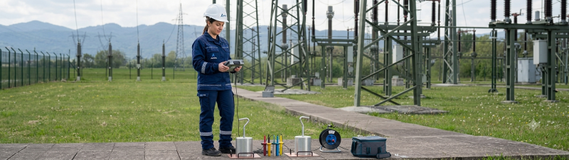

Medição de Tensão de Passo e Tensão de Toque em Sistemas de Aterramento
Engenharia de Segurança, Conformidade Normativa e Continuidade Operacional para Subestações e Plantas Industriais de Alta Potência
Referências técnicas: IEEE Std 80 · IEEE Std 81.2 · ABNT NBR 15751:2013 · ABNT NBR 7117 · NR-10
Avaliação da segurança de pessoas em subestações, usinas hidrelétricas, parques eólicos, parques fotovoltaicos, distribuidoras, transmissoras e plantas industriais de alta potência — com engenharia própria, responsabilidade técnica (ART) e critérios de aceitação rastreáveis à norma.
A ABNT NBR 15751 é a norma brasileira oficialmente adotada para o dimensionamento e a verificação de segurança de sistemas de aterramento de subestações de energia elétrica acima de 1 kV — é a referência técnica central de todo o conteúdo desta página.
Resposta Direta
A tensão de passo é a diferença de potencial entre os dois pés de uma pessoa (distância padronizada de 1 m) na superfície do solo, e a tensão de toque é a diferença de potencial entre a mão em contato com uma estrutura aterrada e os pés, ambas originadas pelo gradiente de potencial que uma corrente de falta à terra cria no solo. A ABNT NBR 15751:2013 — norma brasileira oficialmente adotada para sistemas de aterramento de subestações acima de 1 kV — estabelece os critérios de cálculo e os limites admissíveis; a IEEE Std 81.2 (Guide for Measurement of Impedance and Safety Characteristics of Large, Extended or Interconnected Grounding Systems) estabelece os métodos de ensaio de campo. Um sistema de aterramento é considerado seguro quando as tensões reais medidas ou calculadas (Vp, Vt) permanecem abaixo dos limites admissíveis pelo corpo humano (Ep, Et) no tempo de eliminação da falta.
1. O que é tensão de passo?
A tensão de passo (Ep/Vp) é a diferença de potencial na superfície do solo a que fica submetida uma pessoa cujos pés — separados pela distância padronizada de 1 m — estão em dois pontos distintos do campo de potencial gerado por uma corrente de falta à terra.
Origem física: durante uma falta fase-terra, uma parcela da corrente de curto-circuito (corrente de malha, Im) é dissipada pelo eletrodo de aterramento para o solo. Como o solo possui resistividade finita, essa dissipação gera um gradiente de potencial na superfície — mais acentuado nas proximidades do ponto de injeção e da periferia da malha, onde a ABNT NBR 15751 identifica os maiores valores de tensão de passo (Anexo B, item B.2.1).
Por que representa risco: o gradiente de potencial, aplicado à distância entre os dois pés, pode gerar uma diferença de tensão suficiente para fazer circular pelo corpo humano uma corrente elétrica de intensidade perigosa, com risco de fibrilação ventricular.
2. O que é tensão de toque?
A tensão de toque (Et/Vt) é a diferença de potencial entre uma estrutura metálica aterrada — que assume o potencial do sistema de aterramento durante uma falta (elevação de potencial de terra, GPR) — e os pés de uma pessoa que a toca, estando o solo sob os pés em outro potencial.
A norma e a prática internacional de engenharia distinguem três situações:
- Toque direto: contato da mão com uma estrutura energizada acidentalmente e diretamente conectada à malha (ex.: carcaça de transformador, estrutura de pátio).
- Toque indireto: contato com uma massa metálica normalmente não energizada, mas que assume potencial perigoso por falha de isolamento ou de equipotencialização.
- Tensão de toque transferida: potencial transferido para um ponto remoto por meio de um condutor metálico contínuo (cerca, tubulação, trilho, blindagem de cabo) que sai da área de influência do eletrodo de aterramento — conceito definido na NBR 15751 (item 3.14, “potencial transferido”) e tratado no IEEE Std 81.2 no contexto de blindagem de cabos de comunicação e interferência em circuitos paralelos.
Por que a tensão de toque tende a ser mais crítica: o percurso da corrente vai da mão aos pés, atravessando a região do tórax — incluindo o coração —, o que aumenta a probabilidade de fibrilação ventricular em relação ao percurso pé-a-pé da tensão de passo.
Equipamentos e pontos de maior risco: carcaças de transformadores, disjuntores e cubículos; estruturas metálicas de pátio; cercas e portões (especialmente os seccionados incorretamente na transição interna/externa à malha); grades e blindagens de cabos de controle; para-raios e suas descidas.
3. Tensão de Passo e Tensão de Toque, como ocorre um acidente?
A sequência técnica de um evento de risco segue esta lógica:
- Falta à terra: um condutor energizado entra em contato com o solo ou com uma parte aterrada (defeito de isolamento, rompimento de cabo, descarga atmosférica, manobra indevida).
- Corrente de falta (If): flui para o sistema de aterramento; parte dela — a corrente de malha (Im) — é efetivamente dissipada para o solo pelo eletrodo de aterramento.
- Distribuição do potencial: o gradiente de potencial se estabelece na superfície do solo em função da resistividade local e da geometria da malha (espaçamento, profundidade, número de condutores e hastes).
- Percurso pelo corpo humano: se uma pessoa estiver nesse campo de potencial (pé-a-pé ou mão-pés), uma corrente de choque circula pelo corpo, cuja magnitude depende da tensão aplicada e das resistências do corpo, dos pés e do contato com o solo.
- Tempo de eliminação da falta: é o fator decisivo para a gravidade do acidente. A NBR 15751 diferencia corrente de choque de curta duração (Ichcd), associada ao tempo de atuação da proteção, e de longa duração (Ichld), para faltas não eliminadas pela proteção em até 3 s (item 7.1 e 7.2).
- Influência da resistividade superficial: uma camada superficial de alta resistividade (ex.: brita) sob os pés reduz a corrente de choque para uma mesma tensão aplicada — é o fator “C” e a resistividade “ρs” que entram diretamente no cálculo do limite admissível (NBR 15751, equações 10 e 11).
4. Onde existe esse risco de Tensão de Passo e Tensão de Toque?
O risco de tensão de passo e de toque está presente em qualquer instalação que dissipe corrente de falta para o solo em nível de tensão superior a 1 kV — escopo explícito da ABNT NBR 15751 (item 1). Isso inclui:
- Subestações de distribuição, transmissão e geração (AT/EAT)
- Usinas hidrelétricas
- Usinas fotovoltaicas (centrais geradoras e SE elevadoras)
- Parques eólicos (aerogeradores, SE coletora, SE de conexão)
- Subestações elevadoras e abaixadoras
- Linhas de transmissão (estruturas, pórticos, pés de torre)
- Pátios GIS (subestações isoladas a gás)
- Pátios AIS (subestações isoladas a ar)
- Centrais termelétricas
- Plantas de mineração
- Siderúrgicas
- Portos com infraestrutura elétrica de alta potência
- Instalações ferroviárias eletrificadas
- Petroquímicas e refinarias
5. Quem precisa realizar esse estudo?
- Geradoras (hidrelétricas, termelétricas, eólicas, fotovoltaicas)
- Transmissoras
- Distribuidoras
- Autoprodutores de energia
- Consumidores livres e especiais conectados em alta tensão
- Grandes indústrias com subestação própria (siderurgia, mineração, petroquímica, sucroenergético)
- Centros de dados com infraestrutura elétrica crítica
- Hospitais com subestação de alta tensão
- Aeroportos com infraestrutura elétrica própria de médio/alto porte
Em todos esses casos, o estudo de tensão de passo e de toque é parte integrante do projeto e da manutenção do sistema de aterramento — não um serviço avulso, mas um requisito de engenharia continuamente verificável ao longo da vida útil da instalação.
6. A legislação e as normas técnicas exigem esse estudo?
Esta é a seção onde a precisão importa mais do que a persuasão. Separamos, deliberadamente, o que é obrigação legal, o que é exigência normativa técnica e o que é boa prática de engenharia — para que a conformidade declarada pela EletroAlta seja sempre defensável.
6.1 Obrigação legal (Normas Regulamentadoras do Ministério do Trabalho e Emprego)
A NR-10 (Segurança em Instalações e Serviços em Eletricidade), de observância obrigatória para empregadores e trabalhadores, estabelece:
- Item 10.2.3: as empresas são obrigadas a manter esquemas unifilares atualizados das instalações elétricas de seus estabelecimentos, com as especificações do sistema de aterramento e demais equipamentos e dispositivos de proteção.
- Item 10.2.7: os documentos técnicos previstos no Prontuário de Instalações Elétricas (PIE) devem ser elaborados por profissional legalmente habilitado.
- Item 10.2.8.3: o aterramento das instalações elétricas deve ser executado conforme regulamentação estabelecida pelos órgãos competentes e, na ausência desta, deve atender às normas internacionais vigentes.
Na prática, isso significa que o PIE exigido pela NR-10 não se cumpre apenas com o desenho do sistema de aterramento — a especificação técnica do sistema, incluindo o comportamento de tensão de passo e de toque frente aos limites de segurança, é elemento que a fiscalização do trabalho pode exigir como evidência de conformidade.
6.2 Exigência normativa técnica (ABNT)
- ABNT NBR 15751:2013 — Sistemas de aterramento de subestações — Requisitos. Especifica os requisitos para dimensionamento do sistema de aterramento de subestações acima de 1 kV e estabelece as condições de segurança para pessoas e instalações, dentro e fora dos limites da subestação (item 1, Escopo). É a norma técnica brasileira oficialmente adotada para este serviço.
- ABNT NBR 7117 — Medição da resistividade do solo pelo método dos quatro pontos (Wenner). Referenciada como norma indispensável pela própria NBR 15751 (item 2, Referências normativas) para a caracterização geoelétrica do terreno que fundamenta todo o cálculo de tensão de passo e de toque.
- ABNT NBR 15749 — Medição de resistência de aterramento e de potenciais na superfície do solo em sistemas de aterramento. Também referenciada como indispensável pela NBR 15751.
A NBR 15751 é norma técnica, não lei — mas sua não observância, quando a instalação opera acima dos limites de segurança calculados por ela, é evidência técnica direta de negligência em eventual apuração de responsabilidade civil ou criminal por acidente, e compromete a defesa técnica do responsável pela instalação.
6.3 Boa prática internacional de engenharia
- IEEE Std 80 — Guide for Safety in AC Substation Grounding. Guia internacional de segurança em aterramento de subestações CA, referência consolidada mundialmente e cuja abordagem metodológica (fatores geométricos Km, Ks, Ki; corrente admissível em função do tempo) é estruturalmente equivalente à adotada pela NBR 15751.
- IEEE Std 81.2 — Guide for Measurement of Impedance and Safety Characteristics of Large, Extended or Interconnected Grounding Systems. Guia específico para medição de impedância e características de segurança de sistemas de aterramento grandes, estendidos ou interligados (ex.: subestações de grande porte, parques de geração interligados por malhas extensas). É a referência técnica adotada pela EletroAlta para a metodologia de campo com injeção de corrente, na edição vigente aplicável ao método utilizado em cada projeto.
6.4 Responsabilidade técnica profissional
- Lei nº 5.194/1966 regula o exercício da profissão de engenheiro.
- Lei nº 6.496/1977 institui a Anotação de Responsabilidade Técnica (ART), obrigatória para todo contrato de prestação de serviços de engenharia — incluindo o estudo, a medição e o relatório de tensão de passo e de toque.
6.5 Requisitos de concessionárias, ONS e ANEEL
Geradoras, transmissoras e consumidores conectados à rede básica ou a redes de distribuidoras estão sujeitos a requisitos técnicos de conexão e a auditorias periódicas que podem incluir a verificação do sistema de aterramento e de seus limites de segurança.
Importante: diferentemente da NR-10 — que é norma federal de observância obrigatória e uniforme para qualquer estabelecimento —, as exigências de aterramento aplicáveis a agentes do setor elétrico variam conforme a categoria do empreendimento (geração, transmissão, distribuição ou consumidor livre), o contrato de conexão firmado e os Procedimentos de Rede do ONS ou as normas técnicas da concessionária acessante. Não existe um único artigo ou submódulo que se aplique uniformemente a todos os casos. Por esse motivo, a EletroAlta realiza a verificação regulatória específica para cada empreendimento, como etapa preliminar de todo projeto, em vez de aplicar uma exigência genérica que poderia não corresponder à categoria real do cliente.
7. Quando o estudo deve ser realizado ou refeito?
- Na concepção de uma nova instalação, subestação ou planta.
- Em ampliação de capacidade ou de área da subestação.
- Em reforma que altere a malha de aterramento existente.
- Após qualquer alteração física da malha (corte, extensão, substituição de condutores).
- Após aumento da potência instalada ou da corrente de curto-circuito disponível.
- Após alteração dos ajustes de proteção (relés) que modifique o tempo de eliminação da falta — parâmetro que entra diretamente no cálculo de Ichcd (NBR 15751, equação 6).
- Após mudança na corrente de curto-circuito fase-terra fornecida pela concessionária/ONS.
- Após mudança nas características do solo (obras civis, aterros, movimentação de terra, época do ano/umidade).
- Após acidentes envolvendo choque elétrico ou falha de aterramento.
- Após descargas atmosféricas severas com indício de dano à malha.
- Como parte de programas periódicos de auditoria técnica e de manutenção preditiva.
Nota técnica: a NBR 15751 não fixa, no corpo da norma, uma periodicidade obrigatória universal para reensaio de tensão de passo e toque — a periodicidade é definida pela combinação de boa prática de engenharia, política interna de gestão de ativos do cliente e, quando aplicável, requisitos específicos de conexão da concessionária/ONS. Recomendações de periodicidade fixa (ex.: “a cada X anos”) sem essa contextualização não têm lastro normativo direto e não devem ser apresentadas como obrigação legal genérica.

8. Como é feita a medição — Metodologia EletroAlta
A EletroAlta segue a metodologia de ensaio descrita na IEEE Std 81.2 (edição vigente aplicável ao método utilizado), seção 8 (técnicas de injeção de corrente) e seção 12 (medições de passo, toque e perfil de tensão).
Passo 1 — Prospecção geoelétrica e caracterização do solo
Medição da resistividade do solo pelo método de Wenner (ABNT NBR 7117), com estratificação em camadas (NBR 15751, Anexo A) para obtenção da resistividade aparente utilizada no dimensionamento e na verificação da malha.
Passo 2 — Injeção de corrente e ensaio de campo
A IEEE Std 81.2 estabelece que, quando a elevação de potencial de terra (GPR) calculada excede o fator de segurança predeterminado pela concessionária (tipicamente entre 2 kV e 5 kV), medições mais extensas de passo, toque e perfil de tensão devem ser realizadas (item 12.1). Essas medições podem ser feitas por:
- Ensaio de fall-of-potential / injeção de corrente controlada, com eletrodo de corrente remoto e circulação de corrente entre a malha e esse eletrodo, medindo-se o potencial entre pares de eletrodos de teste espaçados em 1 m — a distância padrão que define fisicamente a tensão de passo (IEEE Std 81.2, item 12.1).
- Ensaio de falta simulada (staged fault test), com corrente de falta real de magnitude superior a 1 kA, aplicado quando há necessidade de simular com maior fidelidade as condições reais de curto-circuito fase-terra, incluindo o efeito de blindagem de cabos-guarda e a distribuição real da corrente entre a malha e caminhos paralelos (IEEE Std 81.2, item 9 e 13.7).
- Método de simulação de pessoa (simulated-personnel method), no qual eletrodos são fixados a botas e luvas isolantes para simular, com resistor de 1.000 Ω, a resistência do corpo humano, permitindo localizar em campo os pontos de tensão de passo e de toque mais críticos da instalação (IEEE Std 81.2, item 12.5).
Este é o ponto técnico que separa um laudo de engenharia real de uma medição de resistência de aterramento com multímetro/terrômetro comum: o terrômetro convencional mede resistência de aterramento em condição de baixa corrente e não reproduz o gradiente de potencial gerado por uma corrente de falta real — não é, por si só, evidência suficiente de que os limites de tensão de passo e de toque estão sendo respeitados.
Passo 3 — Mapeamento de gradientes de potencial
Levantamento do perfil de potencial na superfície do solo, dentro e fora da área da malha, com atenção especial à periferia (onde a NBR 15751 identifica os maiores valores de tensão de passo, Anexo B) e a estruturas metálicas isoladas ou parcialmente equipotencializadas (cercas, tubulações, trilhos).
Passo 4 — Modelagem computacional e cálculo das tensões admissíveis
Cálculo de:
- Corrente de malha (Im), a partir da corrente de falta fornecida pela concessionária/ONS, do fator de decremento (Df) e do fator de distribuição (Sf) entre a malha e caminhos paralelos como cabos-guarda e neutros multiaterrados (NBR 15751, seção 8).
- Tensões reais de passo (Vp) e de toque (Vt), pelas equações da NBR 15751 (Anexo B, para malhas reticuladas retangulares em solo homogêneo) ou por metodologias mais sofisticadas para solo estratificado e geometrias não padronizadas (Anexo C — método do potencial constante ou elementos finitos).
- Tensões admissíveis pelo corpo humano (Ep, Et), em função da resistência do corpo (Rch = 1.000 Ω), da resistividade e espessura da camada superficial (ρs, C) e da corrente de choque admissível — de curta duração, pela relação Ichcd = 0,116/√t (A), válida para 99,5% das pessoas com peso ≥ 50 kg no intervalo 0,03 s ≤ t ≤ 3 s (NBR 15751, equação 6); ou de longa duração, pela Tabela 4 da norma (9 mA para homens e 6 mA para mulheres, para 99,5% da população).
Passo 5 — Relatório de diagnóstico e plano de mitigação de Tensão de Passo e Tensão de Toque
Comparação objetiva Vp ≤ Ep e Vt ≤ Et, com relatório técnico assinado, ART, registro fotográfico, mapa de pontos medidos e, quando os limites forem ultrapassados, plano de mitigação de engenharia (Seção 12).
9. Como avaliamos os resultados — Critério de segurança
O critério de aceitação é objetivo e verificável: o sistema de aterramento é considerado seguro quando a tensão de passo real (Vp) e a tensão de toque real (Vt), calculadas ou medidas para as condições de curta e de longa duração, permanecem inferiores às respectivas tensões admissíveis (Ep, Et), conforme NBR 15751, item 9.
Isso depende de quatro variáveis que devem estar tecnicamente sustentadas — nunca estimadas:
- Corrente de falta real fornecida pela concessionária/ONS para o ponto de instalação (não um valor genérico de catálogo).
- Tempo de eliminação da falta, definido pelos ajustes reais da proteção (relés e disjuntores) — inclusive o efeito do religamento automático, quando aplicável (NBR 15751, item 7, Figura 1).
- Resistividade do solo, medida em campo pelo método de Wenner e estratificada conforme as condições reais do terreno.
- Resistividade e espessura da camada superficial (brita ou outro recobrimento), que altera diretamente o valor da tensão admissível.
Um cálculo que não parta de dados reais de campo para essas quatro variáveis não é um estudo de tensão de passo e de toque — é uma estimativa sem valor probatório em auditoria.
10. Principais não conformidades encontradas em campo
Com base na experiência de campo em auditorias e diagnósticos de sistemas de aterramento industrial, as não conformidades mais recorrentes incluem:
- Malha de aterramento com continuidade interrompida (rompimento de condutor ou conexão).
- Corrosão avançada em condutores, conexões e hastes, elevando a resistência de contato.
- Ausência de equipotencialização entre a malha e massas metálicas próximas (estruturas, grades, cubículos).
- Portões e cercas metálicas não seccionados corretamente na transição entre a área interna e externa à malha — situação que a NBR 15751 trata explicitamente como fonte de tensão de toque elevada (item 10.3 e 10.4, Figuras 11 a 13).
- Ausência ou degradação da camada de brita/recobrimento de alta resistividade sobre a malha.
- Interligação inadequada de para-raios, disjuntores e transformadores à malha (NBR 15751, item 10.4).
- Ausência de rastreabilidade documental — sistemas sem projeto, sem memorial de cálculo e sem histórico de medições, o que impede qualquer defesa técnica em caso de acidente ou auditoria.
11. Erros comuns encontrados em projetos e estudos de aterramento
A Seção 10 trata de não conformidades físicas, encontradas em campo. Esta seção trata de um problema anterior e mais grave: erros conceituais no próprio projeto ou cálculo, que fazem uma instalação parecer segura no papel sem estar segura na prática. Os mais recorrentes, na experiência de auditoria técnica da EletroAlta:
- Usar apenas a resistência da malha como critério de segurança, sem calcular Vp e Vt — a resistência é uma grandeza global e não captura o comportamento local do gradiente de potencial.
- Acreditar que resistência de aterramento inferior a 1 Ω garante segurança — um valor baixo favorece o escoamento de corrente, mas não impede, por si só, tensões de passo ou de toque localizadas acima do limite admissível.
- Não considerar a corrente de malha (Im) real, utilizando a corrente de falta total (If) do sistema em vez da parcela efetivamente dissipada pela malha — a própria NBR 15751 alerta que isso leva a superdimensionamento e pode mascarar pontos críticos (item 8.3).
- Ignorar o fator de distribuição de corrente (Sf) entre a malha e caminhos paralelos, como cabos-guarda de linhas de transmissão e neutros multiaterrados, que na prática podem drenar parte significativa da corrente de falta e alterar substancialmente a corrente de malha real (NBR 15751, item 8).
- Considerar o solo como homogêneo quando a estratificação real em camadas resulta em resistividade muito diferente em profundidade — a NBR 15751 exige avaliação da resistividade aparente para solos estratificados (Anexo A).
- Não considerar a resistividade e a espessura da camada superficial (brita ou outro recobrimento) no cálculo da tensão admissível — um erro que, na prática, subestima artificialmente a margem de segurança real da instalação.
- Esquecer a tensão de toque transferida, deixando cercas, tubulações ou blindagens de cabos sem seccionamento e multiaterramento adequados, criando um caminho de transferência de potencial perigoso para pontos distantes da malha (NBR 15751, item 10.3 e Figura 12).
Cada um desses erros é, isoladamente, suficiente para invalidar a conclusão de segurança de um estudo — mesmo que o restante do memorial de cálculo esteja correto.
12. Como reduzir a tensão de passo e de toque — Plano de mitigação
Reduzir o risco é, tecnicamente, atuar sobre uma ou mais de três variáveis: reduzir a tensão real gerada pela malha (Vp, Vt), elevar a tensão admissível pelo corpo humano (Ep, Et) ou reduzir o tempo de exposição à falta. Nenhuma medida abaixo deve ser aplicada por regra geral — cada uma precisa ser dimensionada por cálculo específico para o solo, a corrente de falta e a geometria da instalação em questão. As medidas mais utilizadas pela engenharia de aterramento, organizadas por mecanismo de atuação:
Redução da tensão real na superfície (Vp, Vt)
- Ampliação da malha e adição de condutores periféricos.
- Redução do espaçamento entre condutores da malha.
- Aumento da profundidade de instalação da malha.
- Instalação de hastes de aterramento profundas em pontos estratégicos.
- Eletrodos horizontais adicionais para redistribuir a corrente de malha.
- Anéis periféricos (malha periférica adicional) para controlar o potencial nas bordas da área protegida.
- Contrapesos interligados à malha principal.
- Redistribuição da corrente de malha por meio de cabos-guarda ou neutros multiaterrados adicionais.
Elevação da tensão admissível pelo corpo humano (Ep, Et)
- Camada de brita de alta resistividade sobre a malha.
- Geotêxtil de alta resistividade como alternativa ou complemento à brita.
- Concreto isolante ou pavimentação de alta resistividade em áreas de circulação de pessoal.
- Tratamento químico do solo superficial para elevação controlada da resistividade em pontos específicos.
Controle de equipotencialização e transferência de potencial
- Equalização e interligação de estruturas, cercas e massas metálicas à malha (NBR 15751, item 10.3 e 10.4).
- Seccionamento correto de cercas na transição interna/externa à malha, com multiaterramento por seção (NBR 15751, Figura 12).
- Isolamento de portões e acessos metálicos sujeitos a potencial de toque.
- Instalação de juntas dielétricas em tubulações e estruturas metálicas que atravessem a área de influência da malha.
- Interligação coordenada com o sistema de SPDA, evitando caminhos de corrente de descarga atmosférica não controlados.
- Blindagem de cabos de controle e comunicação sujeitos a potencial induzido.
Redução do tempo de exposição à falta
- Redução do tempo de eliminação da falta via reajuste da proteção — o tempo entra diretamente na equação da corrente de choque admissível (Ichcd = 0,116/√t); reduzir o tempo de atuação eleva a corrente, e portanto a tensão, admissível pelo corpo humano.
- Revisão da filosofia de atuação dos relés (proteção principal e de retaguarda), incluindo o efeito de eventual religamento automático no tempo total de exposição (NBR 15751, item 7, Figura 1).
13. Benefícios da conformidade técnica
- Eliminação objetiva do risco de acidente fatal por choque elétrico em pessoal próprio, terceiros e visitantes.
- Evidência documental de conformidade para fiscalização do trabalho (NR-10) e para auditorias de concessionária/ONS.
- Redução de exposição à responsabilidade civil e criminal em caso de acidente, por meio de rastreabilidade técnica (projeto, memorial de cálculo, ART, histórico de medições).
- Maior confiabilidade da malha de aterramento como elemento de proteção do sistema elétrico, com impacto direto na coordenação de proteção e na continuidade operacional.
- Suporte técnico a processos de due diligence, seguros e financiamento de projetos (parques eólicos e fotovoltaicos, em particular, são frequentemente auditados nesse quesito por investidores e seguradoras).
14. O que a EletroAlta entrega
- Levantamento de dados de projeto, unifilares e histórico de manutenção da instalação.
- Inspeção física da malha, conexões, equipotencialização e camada de recobrimento.
- Medição de resistividade do solo (NBR 7117) e estratificação do modelo de solo.
- Ensaio de campo de tensão de passo e de toque, com metodologia de injeção de corrente conforme IEEE Std 81.2.
- Modelagem computacional e cálculo das tensões reais e admissíveis conforme NBR 15751.
- Relatório técnico de diagnóstico, com mapa de pontos medidos e registro fotográfico.
- Anotação de Responsabilidade Técnica (ART), conforme Lei nº 6.496/1977.
- Plano de mitigação de engenharia, com recomendações dimensionadas e priorizadas por criticidade.
15. Diferenciais da EletroAlta
- Engenharia independente, sem vínculo comercial com fabricantes de material de aterramento — a recomendação de mitigação segue o cálculo, não o catálogo.
- Metodologia de ensaio alinhada à IEEE Std 81.2 (injeção de corrente e/ou falta simulada, conforme criticidade da instalação), não limitada à medição de resistência de aterramento com terrômetro comum.
- Cálculo de tensões admissíveis e reais rastreável à ABNT NBR 15751:2013, com memorial de cálculo auditável.
- Responsabilidade técnica formalizada por ART em todos os serviços.
- Atuação nacional em subestações, parques de geração e plantas industriais de alta potência.
16. Resistência de Aterramento × Tensão de Passo × Tensão de Toque
Três grandezas frequentemente confundidas entre si, mas que respondem perguntas de engenharia diferentes e exigem métodos de medição distintos:
| Grandeza | Resistência de aterramento | Tensão de passo | Tensão de toque |
|---|---|---|---|
| O que mede | Qualidade global do escoamento de corrente da malha para o solo | Diferença de potencial entre os dois pés de uma pessoa na superfície | Diferença de potencial entre a mão em contato com estrutura aterrada e os pés |
| Unidade | Ω (ohm) | V (volt) | V (volt) |
| Norma de referência | ABNT NBR 15749 | ABNT NBR 15751 (item 7.3) | ABNT NBR 15751 (item 7.4) |
| Método de medição | Terrômetro / método de queda de potencial simples | Injeção de corrente com eletrodos espaçados em 1 m (IEEE Std 81.2, item 12) | Injeção de corrente entre estrutura aterrada e eletrodo de pé (IEEE Std 81.2, item 12) |
| O que garante isoladamente | Escoamento adequado de corrente de falta | Nada, sem cálculo de Ep admissível | Nada, sem cálculo de Et admissível |
| Depende de | Geometria da malha e resistividade do solo | Corrente de malha, geometria da malha, resistividade do solo e da camada superficial | Corrente de malha, geometria da malha, resistividade do solo e da camada superficial |
| Uso correto | Diagnóstico inicial da qualidade do aterramento | Critério de segurança de pessoas na área externa/periférica da malha | Critério de segurança de pessoas em contato com estruturas aterradas |
Conclusão técnica:
a resistência de aterramento é uma condição necessária, mas não suficiente, para a segurança de pessoas. Somente o cálculo e/ou a medição de Vp e Vt, comparados aos limites admissíveis Ep e Et, permitem afirmar que uma instalação está segura contra choque elétrico por gradiente de potencial.
17. Comparativo Técnico — EletroAlta vs. Laudo de Mercado Genérico
| Parâmetro técnico | Laudo genérico de mercado | Engenharia EletroAlta |
|---|---|---|
| Medição de resistência com terrômetro | Sim, isoladamente | Sim, como etapa inicial — não como conclusão |
| Injeção de corrente controlada / ensaio conforme IEEE 81.2 | Raramente presente | Sim, aplicada conforme criticidade da instalação |
| Modelagem de solo multicamadas (NBR 15751, Anexo A) | Raramente presente | Sim, quando o solo não é homogêneo |
| Cálculo de Vp e Vt reais vs. admissíveis (Ep, Et) | Frequentemente ausente | Sim, com memorial de cálculo rastreável à norma |
| Consideração do tempo real de atuação da proteção | Frequentemente ignorado | Sim — parâmetro de entrada obrigatório do cálculo |
| Verificação de equipotencialização (cercas, estruturas) | Frequentemente não inspecionado | Sim, com identificação de não conformidades |
| ART e rastreabilidade documental | Nem sempre presente | Sempre presente |
| Plano de mitigação dimensionado (não genérico) | Raro | Sim, priorizado por criticidade técnica e de risco |
FAQ Técnico — Tensão de Passo e Tensão de Toque
É a diferença de potencial entre os dois pés de uma pessoa (distância padronizada de 1 m), na superfície do solo, gerada pelo gradiente de potencial de uma corrente de falta à terra.
É a diferença de potencial entre a mão de uma pessoa em contato com uma estrutura aterrada e seus pés no solo, durante uma falta à terra. O percurso da corrente pelo tórax faz da tensão de toque, em geral, a condição mais crítica.
A resistência de aterramento é uma grandeza global da malha, medida em condição de baixa corrente. Tensão de passo e de toque são grandezas locais, que dependem da distribuição real do gradiente de potencial sob corrente de falta — uma malha com resistência baixa pode, ainda assim, apresentar pontos localizados de tensão de toque acima do limite admissível, especialmente na periferia ou em estruturas mal equipotencializadas.
Depende do método. A IEEE Std 81.2 descreve tanto métodos de injeção de corrente controlada, aplicáveis com a instalação desenergizada, quanto o ensaio de falta simulada (staged fault test), realizado com a instalação energizada e sob procedimento de segurança específico. A escolha do método é definida pela criticidade da instalação, pela disponibilidade de janela de desligamento e pelo grau de precisão exigido.
A NBR 15751 não fixa uma periodicidade universal. A EletroAlta recomenda reavaliação sempre que houver alteração física da malha, do solo, da corrente de falta disponibilizada pela concessionária/ONS ou dos ajustes de proteção — além de qualquer periodicidade específica exigida pela concessionária, pelo ONS ou pela política de gestão de ativos do cliente.
Tecnicamente, o projeto do eletrodo de aterramento deve ser revisado, com aplicação de medidas de mitigação até que Vp ≤ Ep e Vt ≤ Et em toda a área de influência da instalação. Operar acima desses limites expõe pessoas a risco real de fibrilação ventricular e expõe a empresa a responsabilização em caso de acidente.
Não necessariamente. A brita eleva o valor da tensão admissível (Ep, Et), mas não altera a tensão real (Vp, Vt) gerada pela malha. Em pontos onde a tensão real excede muito o limite, a brita pode ser insuficiente e medidas de redução da tensão real (ampliação de malha, contrapesos, equalização) tornam-se necessárias.
Não isoladamente. Resistência de aterramento baixa favorece o escoamento da corrente de falta, mas não garante, por si só, que o gradiente de potencial na superfície esteja dentro dos limites de segurança — é necessário o cálculo específico de Vp e Vt.
A NR-10 exige, no item 10.2.3, a especificação do sistema de aterramento nos esquemas unifilares do Prontuário de Instalações Elétricas, e no item 10.2.8.3, que o aterramento atenda à regulamentação dos órgãos competentes ou, na ausência dela, às normas internacionais. A verificação de tensão de passo e de toque é o instrumento técnico que demonstra, de forma objetiva, que essa especificação está dentro dos limites de segurança.
Não é lei — é norma técnica da ABNT. Sua não observância, contudo, é evidência técnica direta de negligência caso a instalação opere fora dos limites de segurança por ela definidos, com consequências diretas em apuração de responsabilidade civil e criminal.
Engenheiro eletricista devidamente registrado no CREA, conforme Lei nº 5.194/1966 e Lei nº 6.496/1977.
Toda subestação de energia elétrica acima de 1 kV está no escopo da ABNT NBR 15751. A necessidade de reensaio ou reavaliação depende do histórico, das condições do solo e da criticidade da instalação.
Sim. Centrais geradoras fotovoltaicas e eólicas possuem subestações elevadoras/coletoras sujeitas às mesmas exigências normativas de qualquer subestação acima de 1 kV, além de serem frequentemente auditadas nesse quesito por investidores, seguradoras e processos de conexão à rede.
Não plenamente. O cálculo (baseado em dados reais de corrente de falta, tempo de proteção e resistividade do solo) define o comportamento esperado da malha; a medição de campo verifica e valida esse comportamento nas condições reais da instalação, incluindo eventuais não conformidades físicas (corrosão, interrupções, equipotencialização deficiente) que o cálculo teórico não captura.
O escopo, e portanto o custo, depende do porte da instalação, da complexidade do solo, do método de ensaio necessário (injeção controlada ou falta simulada) e da existência ou não de projeto e histórico prévios. A EletroAlta dimensiona o escopo após levantamento técnico preliminar.
Sim, com atuação nacional em subestações, parques de geração e plantas industriais de alta potência.
CTA Final
A tensão de passo e de toque fora do limite de segurança não é um risco teórico — é uma condição física mensurável, com consequência potencialmente fatal e responsabilização técnica, civil e criminal objetiva.
Solicite uma Auditoria Técnica de Segurança do Sistema de Aterramento
O escopo padrão da EletroAlta inclui:
- Levantamento documental (projeto, unifilares, histórico de manutenção e de medições anteriores)
- Inspeção física da malha, conexões, equipotencialização e camada de recobrimento
- Medição de resistividade do solo (ABNT NBR 7117) e estratificação do modelo de solo
- Medição de tensão de passo e de toque, com metodologia de injeção de corrente conforme IEEE Std 81.2
- Cálculo de tensões reais e admissíveis, rastreável à ABNT NBR 15751
- Anotação de Responsabilidade Técnica (ART)
- Plano de mitigação dimensionado e priorizado por criticidade
Atendimento para subestações, parques eólicos e fotovoltaicos, indústrias químicas, plantas sucroenergéticas e instalações de alta e extra-alta tensão em todo o Brasil.
Meta Tags Sugeridas
Meta Title: Medição de Tensão de Passo e Toque em Subestações | NBR 15751 · IEEE 81.2 | EletroAlta
Meta Description: Medição, cálculo e mitigação de tensão de passo e toque em subestações e plantas industriais, conforme ABNT NBR 15751 e IEEE Std 81.2. Engenharia com ART, atuação nacional. Solicite auditoria técnica.
Slug sugerido: /medicao-tensao-de-passo-e-toque